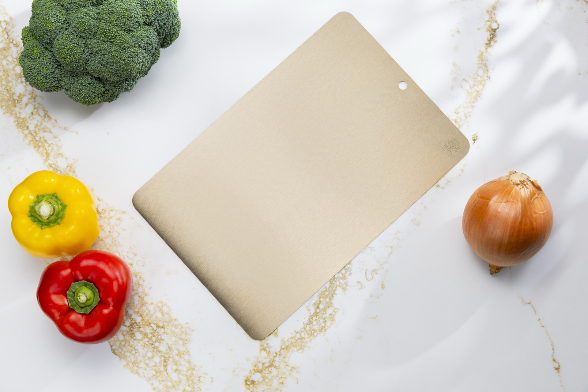

來自頂尖科學的廚房革命
葉均蔚 院士
高熵合金之父 (1995年發明)
- 2025 總統科學獎・工程科學組得主
- 全球前 2% 頂尖科學家
- 權威期刊《Nature》特別專訪

守護家人的每一餐
安心備料，從選擇正確的材質開始。
低碳・節能・健康・安全・環保——世代的傳家寶
熵（ㄕㄤ，讀音同「商」），是熱力學中描述「混亂程度」的物理量。1995 年，清華大學葉均蔚教授逆向思考：「如果我把多種金屬元素，用幾乎等量的比例混合，會發生什麼？」
過去科學界認為這樣只會得到一堆脆裂的廢料，但葉教授的實驗推翻了這個迷思——多元素帶來的「高混亂度（高熵效應）」，反而讓金屬彼此牽制融合，產生出超乎尋常的硬度、韌性、抗腐蝕與抗菌能力。
材料學精確定義：
嚴格依 IUPAC 定義，高熵合金需 5 種以上主元素。本產品以銅為主元素，多元素強化，融入高熵設計概念，依嚴格定義屬中熵合金 (Medium-Entropy Alloy)，但完美具備了高熵觀念的本質強效抗菌特性。
「多元、包容、和諧、共創，才能造就永續的未來。」
高熵合金之父 (1995年發明)
安心備料，從選擇正確的材質開始。
告別艱澀的工業術語，我們將最純粹的健康與安全帶入您的廚房。
多種元素完美調和，創造出超乎尋常的強韌與耐用度。
非表面塗層！材質本身即具備永久強效抑菌能力。
通過嚴格檢驗，確保防霉、抗菌與食品接觸安全性。
保證不含劇毒「鈹」，不產生微塑膠，徹底守護食安。


主打理念：「讓磨刀，就像削鉛筆一樣輕鬆優雅。」
由葉老師親自設計，無須專業技巧，輕滑幾下瞬間恢復極致鋒利。
市售常見材質大比拼，一張表看清楚優劣
| 比較指標 | ⭐ 熵銅合金廚刀 | 傳統不鏽鋼刀 | 陶瓷刀 | 碳鋼刀 | 鈦合金刀 |
|---|---|---|---|---|---|
| 1. 刀刃不傷手 | ✅ 特殊安全刃口設計 | 普通 | 碎裂風險傷人 | 普通 | 佳 |
| 2. 簡單易磨 | ✅ 如削鉛筆般輕鬆 | 需一定技巧 | ✕ 無法自行磨刀 | 需技巧 | 需特殊工具 |
| 3. 抗菌防霉 | ✅ 本質抗菌 99.999% | 無特殊功能 | 普通 | 易生鏽藏菌 | 佳 |
| 4. 安全無火花 | ✅ 絕不產生火花 | ⚠️ 有火花風險 | 無風險 | ⚠️ 有火花風險 | ⚠️ 有火花風險 |
| 5. 無毒無鈹 | ✅ 無鈹・無重金屬 | 佳 | 佳 | 普通 | 佳 |
| 6. 持久鋒利度 | ✅ 高硬度高韌性 | 需頻繁磨刀 | 易脆裂不耐摔 | 佳但易鏽 | 普通 |
| 7. 抗鏽防腐 | ✅ 優異抗腐蝕力 | 部分鋼種易鏽 | 佳 | 差 (極易生鏽) | 佳 |
| 8. 傳家耐用度 | ✅ 傳家寶等級 | 佳 | 差 (易碎需替換) | 普通 | 佳 |
| 比較指標 | ⭐ 熵銅合金砧板 | 傳統不鏽鋼砧板 | 木質砧板 | 塑膠砧板 | 純鈦砧板 |
|---|---|---|---|---|---|
| 1. 抗菌防霉力 | ✅ 本質抗菌 99.999% | 無特殊功能 | 極易發霉長黑斑 | 刀痕藏污易長菌 | 佳 |
| 2. 健康無塑膠微粒 | ✅ 絕對零微塑膠 | 無微粒 | 會掉木屑 | ⚠️ 釋出大量微塑膠 | 無微粒 |
| 3. 不傷刀刃 | ✅ 完美硬度匹配 | ⚠️ 硬碰硬極傷刀 | 保護刀刃 | 深痕難洗 | 易傷刀/留深痕 |
| 4. 快速解凍 | ✅ 極快 (高導熱) | 慢 (導熱差) | ✕ 無此功能 | ✕ 無此功能 | 普通 |
| 5. 安全無火花 | ✅ 絕不產生火花 | ⚠️ 有火花風險 | 無風險 | 無風險 | ⚠️ 有火花風險 |
| 6. 無毒無有害物質 | ✅ 通過嚴格食安認證 | 佳 | 可能含防腐/漂白劑 | ⚠️ 塑化劑風險 | 佳 |
| 7. 清潔便利性 | ✅ 清水一沖去異味 | 佳 | 需抹油/難去異味 | 刀痕易藏污納垢 | 佳 |
| 8. 傳家耐用度 | ✅ 傳家寶等級 | 佳 | 需定期汰換 | 需定期汰換 | 佳 |